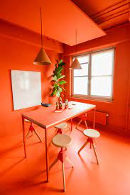
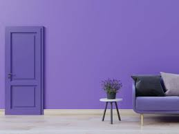
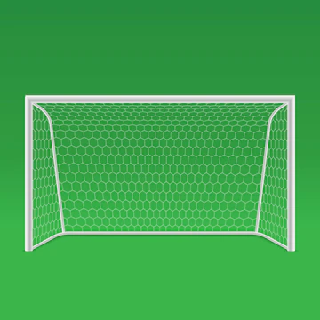

<!DOCTYPE html>
<html>
  <head>
    <title>LAMI Kids</title>
    <script src="https://unpkg.com/jspsych@7.2.3"></script>
    <script src="https://unpkg.com/@jspsych/plugin-html-keyboard-response@1.1.1"></script>
    <script src="https://unpkg.com/@jspsych/plugin-image-keyboard-response@1.1.1"></script>
    <script src="https://unpkg.com/@jspsych/plugin-preload@1.1.1"></script>
    <link href="https://unpkg.com/jspsych@7.2.3/css/jspsych.css" rel="stylesheet" type="text/css" />
  </head>
  <body></body>
  <script>

    var jsPsych = initJsPsych({
  on_finish: function() {
    jsPsych.data.displayData();
  }
});


    var timeline = [];

    var preload = {
      type: jsPsychPreload,
      images: ['img/scorethisway.png', 'img/scorethatway.png', 'img/missthisway.png', 'img/missthatway.png', 'img/blue.png', 'img/orange.png', 'img/thisarrow.png', 'img/thatarrow.png', 'img/orangeroom.jpeg', 'img/purpleroom.jpeg', 'img/greengoal.webp']
    };
    timeline.push(preload);

    var welcome = {
      type: jsPsychHtmlKeyboardResponse,
      stimulus: "Hi there! Welcome to the experiment. Press any key to begin."
    };

    timeline.push(welcome);

    var consent = {
  type: jsPsychHtmlKeyboardResponse,
  stimulus: `
    <p>Before we get started, here is information about <strong>consent</strong>.</p>
    <p> <strong>Parent or Guardian</strong>: This is a practice round to see whether participants between 5-7 years old understand the study, answer the questions accurately, and stay attentive.</p>
    <p> This data will not be used other than for informal interpretation to improve the study design. The participant is welcome to stop whenever, and will always remain anonymous.</p>
    <p> The experiment should take no more than <strong>15 minutes</strong>.</p>
    <p> Do you consent to continuing with the experiment? </p>
    <p> <strong> Participant</strong>: Do you want to play? You are  welcome to stop whenever! </p>
    <p>Press any key to begin.</p>
  `,
};
    timeline.push(consent);

    var meettheball = {
  type: jsPsychHtmlKeyboardResponse,
  stimulus: `
    <p>In this experiment, we are building a new game!</p><p>We need kids who <strong>love playing games</strong>
    to help us make it a good one.</p>
    <p> Do you think you could help by trying it out?</p>
    <p> You will be playing by moving this <strong> blue ball.</strong>
    <div style='width: 700px;'>
    <div style='float: center;'></img>
    <p class='small'><strong>This is your ball!</strong></p></div>
    <p>Press any key to continue.</p>
  `,
};
    timeline.push(meettheball);

    var meetballthisway = {
  type: jsPsychHtmlKeyboardResponse,
  stimulus: `
  <p>In the game you will try today, you can move the ball <strong>this way</strong> or <strong>that way</strong>.</p>
  <p>If you press this button on this side, the ball will go <strong>this way</strong>.</p>
  <div style='width: 700px;'>
  <div style='float: left;'></img>
  <p class='small'><strong>Move this way!</strong></p></div>
  <div style='float: center;'></img>
  </div>
  <p>Press the correct button to move the ball this way.</p>
  `,
  choices: 'f'
};
    timeline.push(meetballthisway);

    var meetballthatway = {
  type: jsPsychHtmlKeyboardResponse,
  stimulus: `
  <p>You can also move the ball <strong>that way</strong>.</p>
  <p>If you press that button on that side, the ball will go <strong>that way</strong>.</p>
  <div style='width: 700px;'>
  <div style='float: right;'></img>
  <p class='small'><strong>Move that way!</strong></p></div>
  <div style='float: center;'></img>
  </div>
  <p>Press the correct button to move the ball that way.</p>
  `,
  choices: 'j',
};
    timeline.push(meetballthatway);

    var meetgamerooms = {
  type: jsPsychHtmlKeyboardResponse,
  stimulus: `
  <p>In the game, you want the ball to score in the red goal, and then the goal will turn green. Nice job! </p>
  <p>When you move the ball,  it will be in the orange room or the purple room, which can block you from scoring. If the ball hits the purple or orange walls, the ball won't score  in  the goal.</p>
  <p>This is what they look like:</p>
  <div style='width: 700px;'>
  <div style='float: left;'></img>
  <p class='small'><strong>Orange Room</strong></p></div>
  <div style='float: right;'></img>
  <p class='small'><strong>Purple Room</strong></p></div>
  <p>Press any key to continue.</p>
  `,
};
    timeline.push(meetgamerooms);

    var meetturninggreen = {
  type: jsPsychHtmlKeyboardResponse,
  stimulus: `
  <p>This is what it looks like when the ball scores and the goal turns green:</p>
  <div style='width: 700px;'>
  <div style='float: left;'></img>
  <p class='small'><strong>You scored! Great job!</strong></p></div>
  <p>Press any key to continue.</p>
  `,
};
    timeline.push(meetturninggreen);

    var test_stimuli = [
  { stimulus: "img/scorethisway.png",  correct_response: 'f'},
  { stimulus: "img/scorethatway.png",  correct_response: 'j'},
  { stimulus: "img/missthisway.png",  correct_response: 'f'},
  { stimulus: "img/missthatway.png",  correct_response: 'j'},
];


    var decision = {
  type: jsPsychHtmlKeyboardResponse,
  stimulus: '<div style="font-size:60px;">+</div>',
  choices: ['f', 'j'],

  data: {
    task: 'decision'
  }
}

    var test = {
        type: jsPsychImageKeyboardResponse,
        stimulus: jsPsych.timelineVariable('stimulus'),
        choices: ['f', 'j'],
        data: {
          task: 'response',
          correct_response: jsPsych.timelineVariable('correct_response')
        },
        on_finish: function(data){
          data.correct = jsPsych.pluginAPI.compareKeys(data.response, data.correct_response);
        }
      };

    var test_procedure = {
        timeline: [decision, test],
        timeline_variables: test_stimuli,
        randomize_order: true,
        repetitions: 1
      };

    timeline.push(test_procedure);

    var debrief_block = {
      type: jsPsychHtmlKeyboardResponse,
      stimulus: function() {

        var trials = jsPsych.data.get().filter({task: 'response'});
        var correct_trials = trials.filter({correct: true});
        var accuracy = Math.round(correct_trials.count() / trials.count() * 100);
        var rt = Math.round(correct_trials.select('rt').mean());

        return `<p>You responded correctly on ${accuracy}% of the trials.</p>
          <p>Your average response time was ${rt}ms.</p>
          <p>Press any key to complete the experiment. Thank you!</p>`;

      }
    };
    timeline.push(debrief_block);

    jsPsych.run(timeline);
  </script>
</html>
